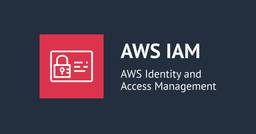

DevelopersIO
https://dev.classmethod.jp
DevelopersIOは、AWS、クラウド、生成AI、データ分析、アプリ開発などの技術情報から、DXやイベントレポート、SaaSやPython、Google Cloudなど多彩なトピックを紹介するクラスメソッドのオウンドメディアです。
フィード
[アップデート] Amazon Redshift の SUPER データ型で最大 16,000,000 バイトの文字列を格納できるようになったので試してみた
DevelopersIO
Amazon Redshift の SUPER データ型で個々の文字列を最大 16,000,000 バイトまで格納できるようになり、65,535 バイトを超える文字列を含む JSON を分割せずにロードできます。Redshift Serverless でパラメータを有効にし、COPY・LISTAGG・日本語の文字列での上限を試しました。
4時間前
Playwright CLI 0.1.23の--isolated-contextで、1つのセッションに2人分のログイン状態を持たせる
DevelopersIO
Playwright CLI 0.1.23のtab-newに--isolated-contextが加わり、1つのセッションでcookieとstorageを分けたタブを開けます。2人分のログインを持たせる手順、状態が消える時点と引き継ぎ方、-sとの使い分けを確かめました。
13時間前
DependabotでAgent Package Manager（APM）の依存を更新する：apm.ymlの書き方ごとに何が書き換わるかを確かめた
DevelopersIO
DependabotがAgent Package Managerに対応しました。ローカルのDependabot CLIで、apm.ymlのタグ・コミットSHA・ブランチの各ピンとapm.lock.yamlがどう書き換わるか、更新されない書き方とあわせて確かめました。
1日前
FirecrackerのCVE-2026-122192を読む：メモリの解放に失敗すると、ゲストからVMMのメモリを読み書きできる仕組みと対象条件 1
1
DevelopersIO
Firecracker の CVE-2026-122192 は、スナップショットから復元した VM でメモリの解放に失敗しても処理が続き、ゲストの root が Firecracker プロセスのメモリを読み書きできる問題です。仕組みを図で整理し、対象の条件と対策をまとめます。
1日前
[アップデート] AWS Glue ETL ジョブで Glue バージョンに Auto を指定できるようになったので、5.1 から 6.0 への自動アップグレードを試してみた
DevelopersIO
AWS Glue ETL ジョブの Glue バージョンに Auto を指定すると、ジョブの実行を観測して互換性を確認し、承認後に最新の Glue 6.0 で実行して出力・性能・コストを比較したうえで移行が完了します。スクリプトは変更されず、追加料金もかかりません。Glue 5.1 のジョブで 6.0 への移行を試しました。
1日前
Amazon EMR Serverless の事前初期化容量で、ジョブが開始されるまでの時間をジョブの間隔ごとに測ってみた
DevelopersIO
Amazon EMR Serverlessの事前初期化容量について、実際にベンチマークを取ってジョブ開始速度を測定してみました。条件によって効果に大きな差があることが分かりました。
1日前
[アップデート] Amazon DynamoDB で S3 から新規テーブルを作成せずに既存テーブルへ一括取り込みできる Bult Put Items が使えるようになりました
DevelopersIO
「一括 PUT 項目」
1日前
Kiro のクレジットプーリングで月額はどう変わるか、先月の利用ログで試算してみた
DevelopersIO
先月の Kiro 利用ログから、月 500 クレジット以下の Pro ユーザー 20人と、月 7,600 クレジットを使うヘビーユーザー1人を共有プールに移した場合の月額を試算しました。個別プランのままなら月 $684 の費用を、共有プールなら月 $420 に抑えられる結果になりました。
1日前
AD Connector の DNS 変更後、Amazon WorkSpaces（Windows）を再構築せずに新しい DNS へ切り替える方法
DevelopersIO
ActiveDirectoryのリプレースに伴いDNS IPが変わる場合、Amazon WorkSpacesのレジストリにある旧DNS設定を新しいものに更新する必要があります。本記事では、既存WorkSpaceを再構築せずにPowerShellでレジストリを直接更新し、段階的にDNSを切り替える手順をご紹介します。
1日前
AWS Continuumの脅威モデリング（プレビュー）に設計書だけを渡して、仕込んだ弱点をどこまで見つけるか試してみた
DevelopersIO
AWS Continuumの脅威モデリング機能に、架空のファイル共有サービスの設計書を渡して、仕込んでおいた16個の弱点がどこまで脅威として検出されるかを試してみました。設計の段階で活用できる可能性と、実際の限界について紹介します。
1日前
[イベントレポート]SNOWFLAKE WORLD TOUR TOKYO 2026の会場レポート #SWTTokyo26
DevelopersIO
9月10日・11日に開催された「SNOWFLAKE WORLD TOUR TOKYO」の会場の雰囲気を、写真多めでご紹介します。昨年以上の盛り上がりを見せたイベントの様子をお届けします。
1日前

NVIDIAの音声強調モデル「NemotronLabs RE-USE」を公式実装で動かしてみた（9.6Mパラメータで商用利用可）
DevelopersIO
NVIDIAの音声強調モデル「NVIDIA NemotronLabs RE-USE」が公開されたので、モデル群の整理から実装検証、L40Sでの速度・メモリ測定まで、実運用を想定した導入ガイドをお届けします。
2日前

ClaudeのChatとCoworkの統合は、実行基盤がクラウドに揃ったということ
DevelopersIO
ClaudeのChatとCoworkの統合を、実行環境の変遷から整理します。PC上のVMで動いていたCoworkがクラウドで動くようになり、必要なときだけVMを使うChatのセッションとして1つにまとまりました。
2日前
Amazon Connect Customer のインスタンスに移行可能な電話番号数の上限について教えてください
DevelopersIO
Amazon Connectで複数の電話番号を移行する際、インスタンスあたりの電話番号クォータに注意が必要です。移行前にクォータ値を確認し、必要に応じて上限緩和をリクエストする方法について解説します。
2日前

[AWS Lambda] Web Functions は I/O 待ちの負荷で実行環境がいくつ立つのか、スロットリングまで実測してみました 3
DevelopersIO
AWS Lambda Web Functionsの実行環境スケーリングについて、I/O待ち主体の負荷で実測してみました。関数作成直後と暖めた後で環境数や429エラーの出方がどう変わるのか、maxEnvironmentsやrateLimitの上限に当たったときの挙動を確認してみた結果を共有させてください
2日前
生成AIと姿勢推定ライブラリを使って作業動画から手順書を自動生成する試行錯誤 1
DevelopersIO
作業動画から手順書を自動生成するとき、生成AIが「何をしているか」を判断し、姿勢推定が「どれだけ動いたか」を数値で測る——この役割分けで、初めて実用的な手順書ができるかもしれません。10秒のハンドル操作動画で試してみました。
2日前
Azureポータルで検証用のサブスクリプションを追加する手順を画面付きで紹介する
DevelopersIO
既存のMicrosoft顧客契約（MCA）の課金アカウントに、Azureポータルから検証用のサブスクリプションを追加した手順を画面付きで紹介します。作成画面で選ぶ請求先とディレクトリの関係、作成後の確認、作成に失敗したときに見直した点もまとめます。
2日前
Cloudflare AI Searchで日本語のキーワード検索を使うなら、trigramトークナイザを作成時に選ぼう
DevelopersIO
Cloudflare AI SearchでCJKに対応したtrigramトークナイザを試しました。作成時に選んだインスタンスは日本語の質問でヒットし、porterは0件でした。既存インスタンスをダッシュボードで後から切り替えた範囲では、約9分待っても検索結果は変わりませんでした。
2日前
mise tasks setでmise.tomlのタスクをコメントを残したまま変更し、rmで削除する
DevelopersIO
mise 2026.10.25で追加されたmise tasks setとrmを2026.11.0で試しました。setで書き換わる範囲と残るコメント、--dry-runと--jsonでの事前確認、書き込み先の選び方、rmで消える範囲、--の後ろに渡すコマンドの扱いをまとめます。
2日前
[Casual] My First Big AWS Event! AWS Cloud and AI Day @ KLCC~
DevelopersIO
I attended AWS Cloud and AI Day in Kuala Lumpur as a walk-in, and it was an amazing experience! Let me share my casual recap of the booths, sessions, and everything I learned from this my first large-scale AWS event~
2日前

新機能 AWS Continuum Code Vulnerabilitiesを使って最近の脆弱性を見つけられるのか試してみた 18
DevelopersIO
# AWS Continuum for code vulnerabilities の要約## サービス概要2026年10月23日にAWSが**Continuum for code vulnerabilities**をGA（一般提供）開始しました。本サービスは、脆弱性の発見から修正提案までをひとつのループにした統合セキュリティサービスです。スキャナー等の検出結果をコードリポジトリおよびAWS環境のコンテキストと突き合わせて「本当に悪用可能か」を見極め、隔離サンドボックス上でPoC（概念実証）を生成し、ビジネス影響度に基づいて優先度付けし、人がマージする前提の修正PRを返すことが特徴です。
2日前
Vite+ 1.5 がリリースされたので、vp migrate は ts-node をどこまで移行してくれるのか試してみた
DevelopersIO
Vite+ 1.5 の vp migrate で ts-node のプロジェクトを移行してみました。自動で移るのは型チェックをしない ts-node だけで、型チェックありは vp check と分けて手で移す必要がありました。警告に従って直し、ts-node を外すまでを紹介します。
2日前
[アップデート] Amazon S3 Tables で Glue の Hive テーブルを Iceberg テーブルへマネージド移行できるようになったので試してみた
DevelopersIO
Amazon S3 Tables が、Hive テーブルを Iceberg テーブルへマネージドに移行できるようになりました。移行用のジョブを用意せず、移行元を使い続けたまま Start → Sync → Complete で移行でき、型の変換は互換性レポートで確認できます。
2日前
Auth0 の Tenant ACL を設定してみる ─ ログイン画面が表示される前のリクエストを止める
DevelopersIO
Auth0のTenant ACLを検証用テナントで実際に設定し、ログイン画面表示前のリクエストをIPアドレスで遮断する手順を試してみました。管理画面での設定方法からブロック確認まで、実装のポイントをまとめています。
2日前
Amazon CloudFront に Akamai の True-Client-IP ヘッダーを実装してみた
DevelopersIO
Akamai や Cloudflare だとあるのだが、CloudFrotnt でも欲しくなった
2日前

[新機能]Snowflake CoCo for Excelがプレビューとなったので、自然言語クエリ・CORTEX セル関数・Intelligent refresh をExcelで試してみた 1
DevelopersIO
Snowflake CoCo for Excel がプレビューになったので、実際に Excel で自然言語データ取得、PivotTable 作成、CORTEX セル関数、マスキングポリシーの検証を試してみました。
2日前

IAM ユーザーのアクセスキーを廃止して aws login に移行する 1
DevelopersIO
IAM ユーザーの長期アクセスキーは漏れた際の影響が大きいため、aws login を使った短期認証情報への移行を推奨します。本記事では移行の方法を紹介します。
2日前

AIによる情報漏えいを棚卸ししてみた。 22
DevelopersIO
1,000万件を超える個人情報の漏えいが、この5か月で15件公表された。AIは外からの攻撃を速く安くし、内側には新しい漏えいの経路を増やしている。公表事例と調査をたどって棚卸しした。
2日前